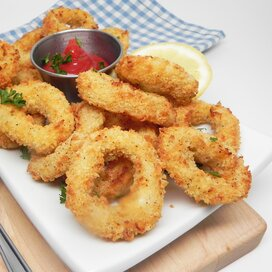

Air-Fried Calamari

"Okay, but what about our pescatarian bros?" Chill cause I gotchu.
I'll waste no words. Here's our favorite seadfood snack.
Ingredients
- 1/2 cup all-purpose flour
- 1 large egg
- 1/4 cup milk
- 2 cups panko bread crumbs
- 1 teaspoon sea salt
- 1 teaspoon ground black pepper
- 1 pound calamari rings, patted dry
- nonstick cooking spray
Steps
- Preheat an air fryer to 400 degrees F (200 degrees C).
- Place flour in a bowl. Whisk egg and milk in a separate bowl. Combine panko, salt, and pepper in a third bowl.
- Coat calamari rings first in flour, then in egg mixture, and finally in panko mixture.
- Place rings in the the basket of the air fryer so that none are overlapping. Work in batches if needed. Spray the tops with nonstick cooking spray.
- Air fry for 4 minutes. Flip rings, spray with nonstick cooking spray, and cook for 3 minutes longer.